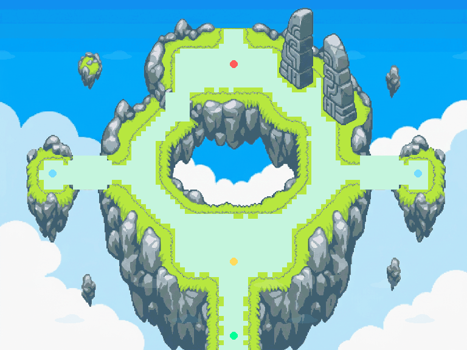

Entrée de l’Île du Zénith — Portail des Alizés (EIZ1)
768×576 px · 96×72 cases de 8 px · arrivée sud → deux branches et belvédères → seuil du portail · runes et nuages calculés (24×8 ticks) · référence Final Island RRT
tick 000 / 192

CalquesFidélité avant quantification
sol : 10.42 (moyenne RGB vers la palette)
ciel : 7.26 (moyenne RGB vers la palette)
roche_hors_contours : 8.96 (moyenne RGB vers la palette)
vegetation : 12.25 (moyenne RGB vers la palette)
scene_complete : 7.15 (moyenne RGB vers la palette)
Composition générée référencée, non certifiée comme tuiles natives. Animations créées pour ce lot, pas cycles ROM. Runtime PMDO non testé.